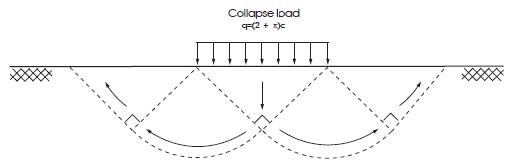
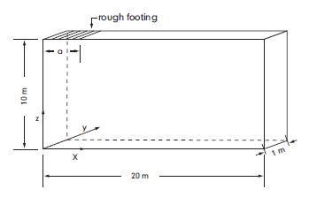
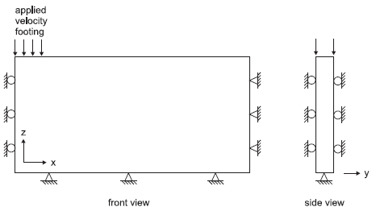
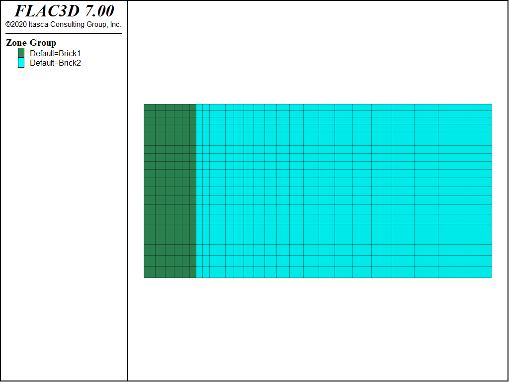
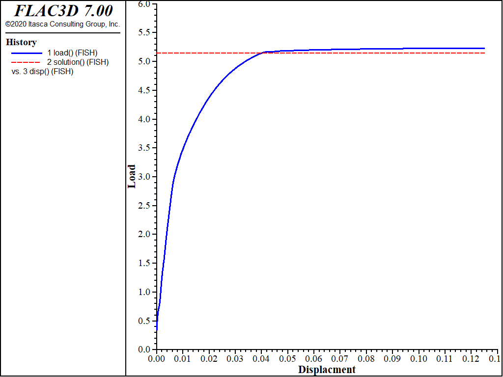
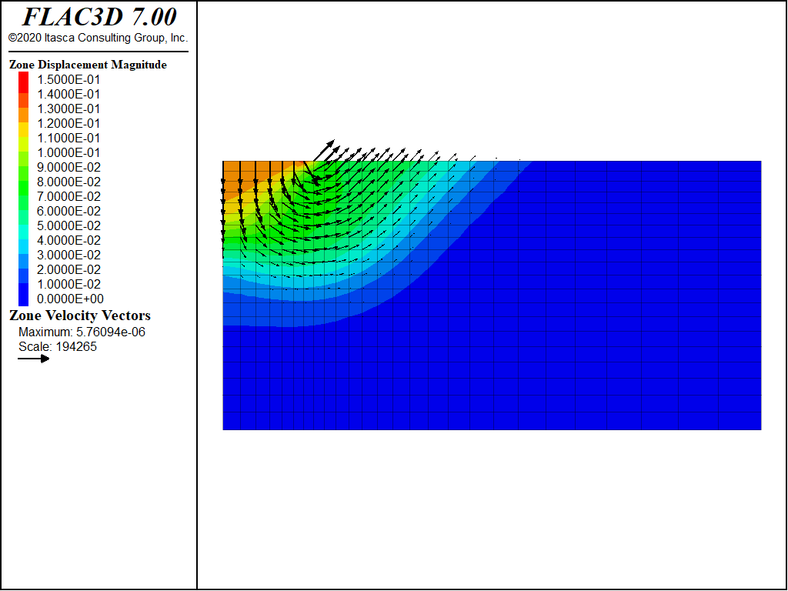
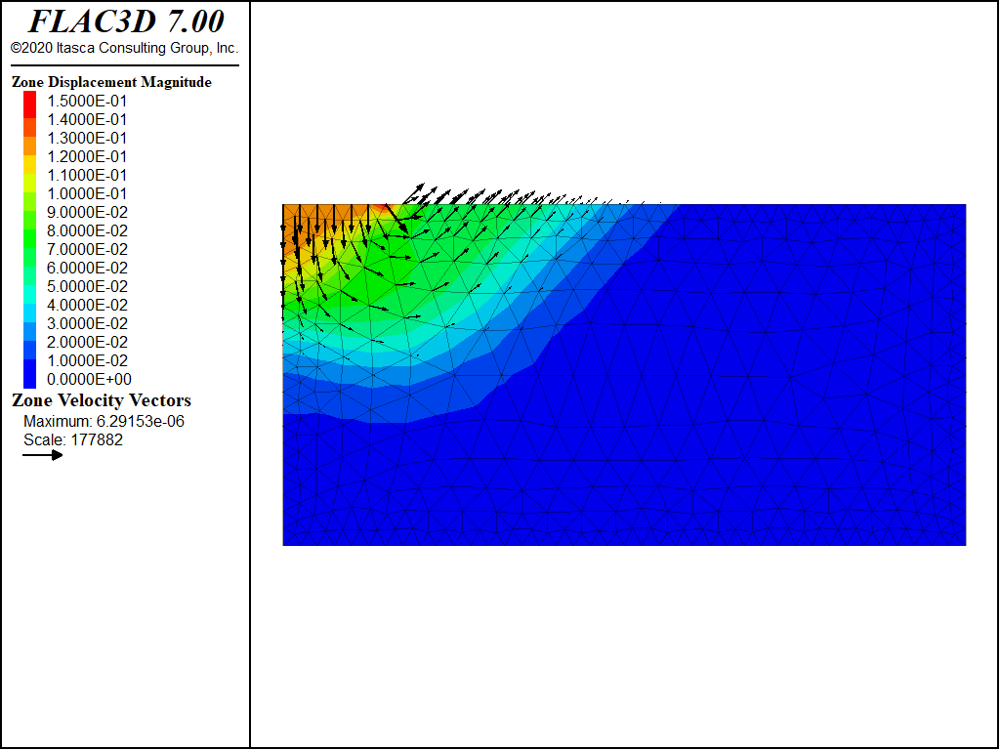

有黏聚力无摩擦材料上的粗糙条形基础
问题描述
注意
本示例的工程文件可在 FLAC3D 中查看/运行。[1] 用于六面体网格单元的数据文件（data file）在本示例末尾给出。其余数据文件可在该工程中找到。
在稳定塑性流动条件下预测破坏荷载，对数值模型而言可能难以准确模拟（Sloan 和 Randolph，1982）。作为稳定流动问题的二维示例，我们考虑确定有黏聚力无摩擦材料（Tresca 模型）上条形基础承载力的情形。当基础下方发展出稳定塑性流动时即得到承载力值，这可衡量程序对该条件的模拟能力。
该条形基础位于具有以下性质的弹塑性材料上：
剪切模量（\(G\)） 0.1 GPa 体积模量（\(K\)） 0.2 GPa 黏聚力（\(c\)） 0.1 MPa 摩擦角（\(\phi\)） 0° 剪胀角（\(\psi\)） 0°
闭式解
作为“Prandtl 楔体”问题解的一部分所得到的承载力，由 Terzaghi 和 Peck（1967）给出为
其中 \(q\) 为破坏时的基础平均压力，\(c\) 为材料的黏聚力。相应的破坏机制示于下图：

图 1：条形基础的 Prandtl 机制。
FLAC3D Model
本问题的数值模拟假定半对称和平面应变条件。分析所用的域及其尺寸绘于下图。

图 2：FLAC3D 模拟的域——半对称。
按图中所示选取一套坐标轴。代表条形基础的区域半宽为 \(a\)，远处 \(x\) 边界位于距 \(y\) 对称轴 20 m 处，远处 \(z\) 边界位于基础以下 10 m 处。该域的厚度取为 1 m。
施加于该域的边界条件绘于下图。粗糙基础的位移在 \(y\) 方向受到约束，并对模型沿 \(z\) 负方向施加速度以模拟基础荷载。在数据文件“PrandtlsWedge.dat”中，基础最右侧的网格点在 \(x\) 方向自由。这一条件是有理由的，因为恰在边缘处的物理约束并不明确，可任意选取。释放该约束可使基础下方应力分布更均匀，但不影响极限荷载。

图 3：FLAC3D 分析的边界条件——半对称。
该域离散为一层 520 个网格单元，按渐变模式组织，如图 4（Figure 4） 所示，渐变布置使应变梯度较大的区域获得更高的分辨率（网格单元尺寸限制）。代表基础的区域与六个网格单元重叠，在接触节点上施加大小为 0.5 × 10-5 m/step 的速度，共计算 25,000 个计算步。
当对网格点施加速度以模拟基础荷载时，基础平均压力通过假定基础宽度由速度从最后一个网格点处的值变化到下一网格点处的零来表示而求得。于是半宽 \(a\) 为
其中 \(x_l\) 为最后一个施加网格点速度的 \(x\) 坐标，\(x_{l+1}\) 为与 \(x_l\) 相邻网格点的 \(x\) 坐标，\(A\) 用于考虑该变化。若假定为线性变化，则 \(A\) = 0.5，本问题的 \(a\) = 3.5 m。该假定的影响在结果与讨论（Results And Discussion）中讨论。
FISH 函数 load 计算归一化基础平均压力的数值 \(p / c\)。


图 4：FLAC3D 网格——竖直平面视图。
结果与讨论
对应于数值模拟的荷载—位移曲线见图 5（Figure 5），其中 load 为归一化基础平均压力 \(p/c\)，位移（disp） 为基础中心处归一化竖向位移的大小 \(u_z/a\)。承载力的数值 \(q\) 为 523.0 kPa，与解析值 514.2 kPa 相比相对误差为 1.72%。
基础的表观宽度取为 3 m 加上与基础边缘相邻的网格单元宽度之半（因为该网格单元对基础施加力，故假定该力在左、右两个网格点之间均分）。
请注意，承载力的误差与基础表观宽度的不确定性有关。图 1（Figure 1） 所示的机制意味着基础两端存在速度奇异。在数值模拟中，该奇异分布在一个网格单元的宽度范围内。该单元内速度跃变的表现位置取决于所形成速度场的精确几何。在推导 \(q\) 时，假定跃变发生在受控边界段端点外半个网格单元宽度处（图 2（Figure 2） 中的 \(A\) = 0.5）；请注意，若假定变化系数 \(A\) = 0.63，误差将降至 0.1% 以下。对于更细的网格，基础宽度的不确定性减小，与精确解的吻合程度提高。


图 5：荷载—位移曲线。
计算结束时的速度云图和速度矢量见图 6（Figure 6），与图 1（Figure 1） 中的机制吻合良好。


图 6：破坏荷载下的速度场。
使用 FLAC3D 的节点混合离散（NMD）功能（文件“nmd.dat”）再次运行了同一问题。该模型采用全四面体网格（文件“nmd.f3grid”，其由文件“create-tet-mesh.dat”生成）。该四面体网格的网格点与六面体网格相同。采用 NMD 时，承载力的数值 \(q\) 为 524.1 kPa，与解析值 514.2 kPa 相比相对误差为 1.9%。如前所述，承载力的误差与基础表观宽度的不确定性有关。图 7（Figure 7） 和 图 8（Figure 8） 给出了 NMD 结果，与图 5（Figure 5） 和 图 6（Figure 6）（全六面体网格的结果）直接对应。可以看出，结果非常相似。



图 8：破坏荷载下的速度场（NMD 结果）。
参考文献
Sloan, S. W., and M. F. Randolph. “Numerical Prediction of Collapse Loads Using Finite Element Methods,” Int. J. Num. & Analy. Methods in Geomech., 6, 47-76 (1982).
Terzaghi, K., and R. B. Peck. Soil Mechanics in Engineering Practice, 2nd Ed. New York: John Wiley and Sons (1967).
数据文件
PrandtlsWedge.dat
;---------------------------------------------------------------------
; Tresca 材料上的二维粗糙条形基础（Prandtl 楔体问题）
; -关联塑性流动-
;---------------------------------------------------------------------
model new
model large-strain off
; 创建网格单元
zone create brick size 6 1 20 point 1 (3.0,0.0,0.0) ...
point 3 (0.0,0.0,10.0) ...
ratio 0.9 1.0 0.97
zone create brick size 20 1 20 point 0 (3.0,0.0,0.0) ...
point 1 (20.0,0.0,0.0) ...
point 3 (3.0,0.0,10.0) ...
ratio 1.08 1.0 0.97
; 分配本构模型和属性
zone cmodel assign mohr-coulomb
zone property bulk 2.e8 shear 1.e8 cohesion 1.e5
zone property friction 0. dilation 0. tension 1.e10
; 为基础表面赋予组名
zone face group 'Footing' range position-x 0 3 position-z 10
; 边界条件
zone face apply velocity-normal 0.0 range position-x 0
zone face apply velocity-normal 0.0 range union position-y 0 position-y 1
zone face apply velocity (0,0,0) range union position-x 20 position-z 0
zone gridpoint fix velocity (0,0,-0.5e-5) range position-x 0 3 position-z 10
zone gridpoint free velocity-x range position-x 3 position-z 10
; program call 调用监测基础荷载的 FISH 函数
program call 'footing-load'
[setup('Footing')]
; 记录若干历史
fish history load
fish history solution
fish history disp
model history mechanical ratio-local
; 循环
model cycle 25000
; 保存模型
model save 'pran'
尾注
| [1] | 要在 FLAC3D 中查看该项目，请使用程序菜单。
⮡ FLAC |
⇐ Cylindrical Hole in an Infinite Hoek-Brown Medium | Smooth Circular Footing on an Associated Mohr-Coulomb Material ⇒
| 这些内容对您有帮助吗？… | FLAC3D © 2019, Itasca | 原文更新于 2020 年 10 月 8 日 |